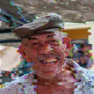

Glitch

Willekeurig verschoven horizontale blokken en kleurkanalen, die een paar keer per seconde veranderen.
Glitch schuift horizontale banen van het beeld opzij en splitst een paar keer per seconde de kleurkanalen. Intensiteit is hoe sterk het is, Blokhoogte hoe hoog de banen zijn en Seed kiest een ander willekeurig patroon. Animeer Intensiteit vanaf 0 voor een korte digitale glitch bij een overgang.
Instellingen
| Instelling | Type | Bereik | Standaard |
|---|---|---|---|
| Intensiteit | Getal | 0 tot 1 | 0.5 |
| Blokhoogte | Getal | 4 tot 80 | 20 |
| Seed | Getal | 0 tot 1000 | 0 |